ООО «КА МодернСтафф»
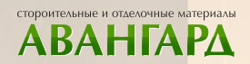
ООО «Авангард»
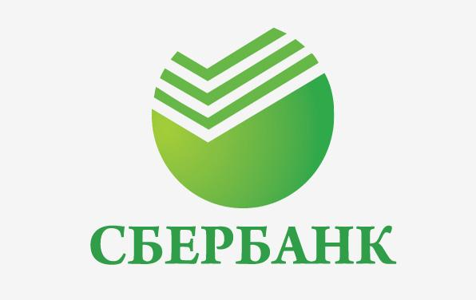
ОАО «Сбербанк России»
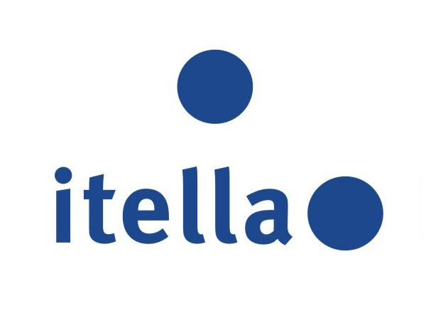
ООО «Ителла»
Институт вычислительных технологий СО РАН
ООО «Дела»
ООО «Термооптима»
 Муниципальное бюджетное образовательное учреждение «Гимназия № 5»
Муниципальное бюджетное образовательное учреждение «Гимназия № 5»
 Муниципальное казённое учреждение города Новосибирска «Городской центр психолого-педагогической поддержки молодёжи «Родник» (МКУ центр «Родник»)
Муниципальное казённое учреждение города Новосибирска «Городской центр психолого-педагогической поддержки молодёжи «Родник» (МКУ центр «Родник»)
 Государственное автономное учреждение Новосибирской области «Центр развития профессиональной карьеры» (ГАУ НСО «ЦРПК»)
Государственное автономное учреждение Новосибирской области «Центр развития профессиональной карьеры» (ГАУ НСО «ЦРПК»)
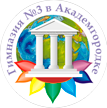
Муниципальное бюджетное общеобразовательное учреждение гимназия № 3 в Академгородке (МБОУ гимназия № 3 в Академгородке)
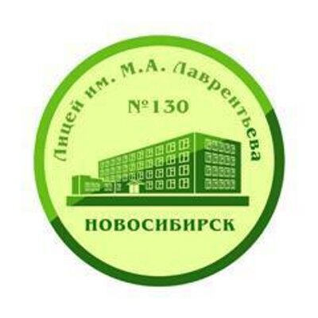
Муниципальное бюджетное общеобразовательное учреждение города Новосибирска «Лицей № 130 имени академика М.А. Лаврентьева» (МБОУ Лицей № 130)
 Общество с ограниченной ответственностью Психологический центр «Меридиан А» (ООО Психологический центр «Меридиан А»)
Общество с ограниченной ответственностью Психологический центр «Меридиан А» (ООО Психологический центр «Меридиан А»)
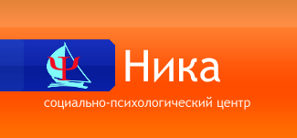
Муниципальное бюджетное образовательное учреждение дополнительного образования «Социально-психологический центр «Ника»
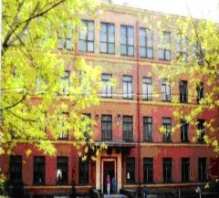
Муниципальное бюджетное общеобразовательное учреждение города Новосибирска «Лицей № 126»
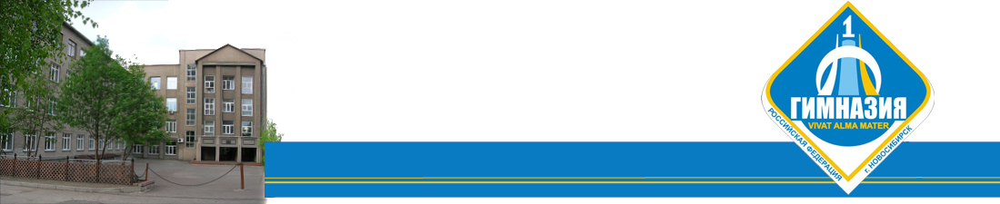
Муниципальное бюджетное общеобразовательное учреждение города Новосибирска «Гимназия № 1»
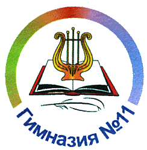
Муниципальное автономное общеобразовательное учреждение города Новосибирска Гимназия № 11 «Гармония» (МАОУ Гимназия № 11 «Гармония»)
ООО «Гектор»
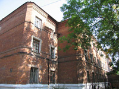
ГБУЗ НСО Государственная «Новосибирская клиническая психиатрическая больница № 3»
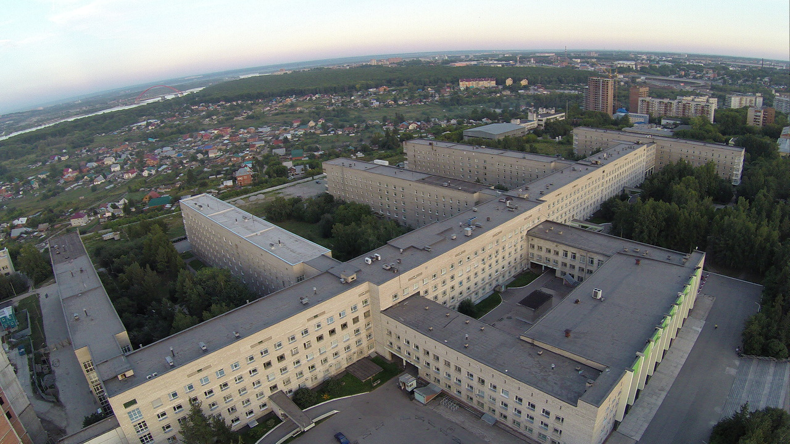
ГБУЗ НСО «Государственная Новосибирская областная клиническая больница»
 Некоммерческая организация фонд развития и оказания специализированной медицинской помощи «Медсанчасть-168»
Некоммерческая организация фонд развития и оказания специализированной медицинской помощи «Медсанчасть-168»
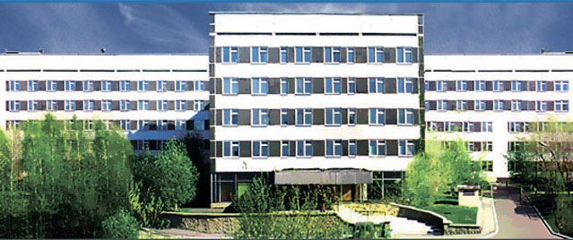
Государственное бюджетное учреждение здравоохранения Новосибирской области «Новосибирский городской перинатальный центр»
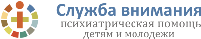
ГБУЗ НСО «Новосибирский областной детский клинический психоневрологический диспансер»
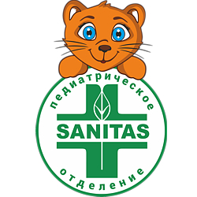
ФГБУ НИИ физиологии и фундаментальной медицины (Клиника НИИ ФФМ, педиатрическое отделение «Ласка»)
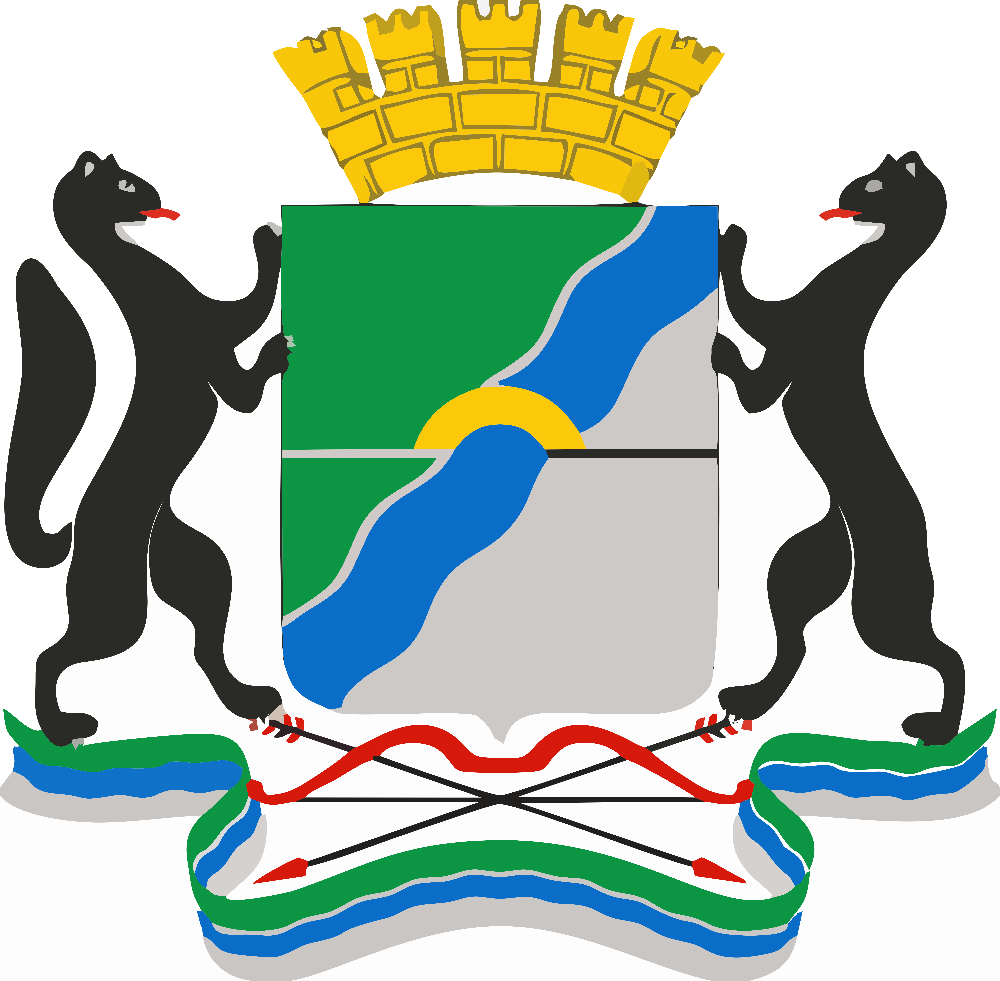
Муниципальное бюджетное учреждение «Комплексный центр социального обслуживания населения» Советского района г. Новосибирска
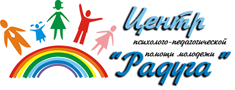
Центр психолого-педагогической помощи молодежи «Радуга»
 МБОУ «Средняя общеобразовательная школа с углубленным изучением отдельных предметов № 2 „Спектр“»
МБОУ «Средняя общеобразовательная школа с углубленным изучением отдельных предметов № 2 „Спектр“»
ООО «Лидер»
ООО «Марвин»
ООО «АКГ»
ООО «ВОДАР»
ООО «Единые системы»
ЗАО НПП «Альтера Системс»
Муниципальное казенное образовательное учреждение дополнительного образования детей города Новосибирска «Детский оздоровительно-образовательный (социально-педагогический) центр А.И. Бороздина» (МКОУДОД «ДООСПЦ А.И. Бороздина»)
Муниципальное бюджетное образовательное учреждение для детей, нуждающихся в психолого-педагогической и медико-социальной помощи «Центр психолого-медико-социального сопровождения «ДАРС» (МБОУ ЦПМСС «ДАРС»)
Негосударственное учреждение дополнительного образования кадровое агентство «Карьера»
Муниципальное образовательное учреждение средняя общеобразовательная школа № 119 (МОУ СОШ № 119)
Муниципальное учреждение Центр психолого-педагогической и медико-социальной помощи «Лад»
Муниципальное бюджетное образовательное учреждение средняя образовательная школа № 75 (МБОУ СОШ № 75)
Муниципальное бюджетное образовательное учреждение средняя образовательная школа № 75 (МБОУ СОШ № 75)
МБОУ г. Новосибирска «Средняя общеобразовательная школа „Перспектива“»
МБДОУ № 304 Детский сад «Ромашка»
ООО «Вираж»
ДОУ № 300 СО РАН
Федеральное государственное бюджетное учреждение здравоохранения «Центральная клиническая больница Сибирского отделения Российской академии наук»


{kind=link}